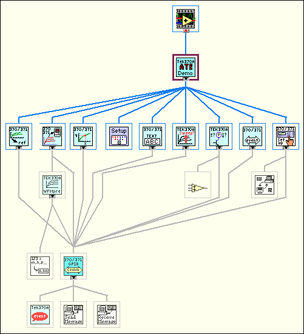

Usually, avoid bottom-up system design as a primary design method. When used in conjunction with top-down design, bottom-up design can be useful. If you start by building the lower level components and then progressing up the hierarchy, you gradually put pieces together until you have the complete system.
The problem with bottom-up design is that, because you do not start with a clear idea of the big picture, you can build pieces that do not fit together correctly.
There are specific cases in which using bottom-up design is appropriate. If the design is constrained by low-level functionality, you can build that low-level functionality first to get an idea of how it will be used. This case is true of an instrument driver where the command set for the instrument constrains you in terms of when you can do certain operations. For example, with a top-down design, you can separate the design so configuring an instrument and reading a measurement from the instrument are done in distinct VIs. However, if the instrument command set is more constraining than you thought, you might need to combine these operations. In this case, using a bottom-up strategy, you can start by building VIs that deal with the instrument command set.
In most cases, use a top-down design strategy, and if necessary, use some components of bottom-up design. In the case of an instrument driver, use a risk-minimization strategy to understand the limitations of the instrument command set and to develop the lower level components. Then use a top-down approach to develop the high-level blocks.
The following example describes in more detail how you can apply this technique to the process of designing a driver for a GPIB instrument.
A complex GPIB-controlled instrument can have hundreds of commands, many of which interact with each other. For such an instrument, a bottom-up approach can be the most effective way to design an instrument driver. The key here is that the problem is detail driven. You must learn the command set and design a front panel that is simple for the user yet gives full control of the instrument functionality. Design a preliminary VI hierarchy, preferably based on similar instrument drivers, to satisfy the needs of the user. Designing a driver requires more than putting knobs on GPIB commands. For example, the Tektronix� 370A Curve Tracer has about 100 GPIB commands if you include the read and write versions of each command.
Once you begin programming, the hierarchy fills out naturally, one subVI at a time. Add lower level support VIs as required, such as a communications handler, a routine to parse a complex header message, or an error handler. For example, the 370A requires a complicated parser for the waveform preamble that contains information such as scale factors, offsets, sources, and units. It is much cleaner to bury this operation in a subVI than to let it obscure the function of a higher level VI. A communications handler also makes it simple to exchange messages with the instrument. Such a handler formats and sends the message, reads the response if required, and checks for errors.
Once the basic functions are ready, assemble them into a demonstration driver VI that makes the instrument perform a useful function. The driver VI quickly finds any fundamental flaws in earlier choices of data structures, terminal assignments, and default values.
The top-level VI in the following illustration is an automated test example. It calls nine of the major functions included in the driver package. Each function, in turn, calls subVIs to perform GPIB I/O, file I/O, or data conversion.
